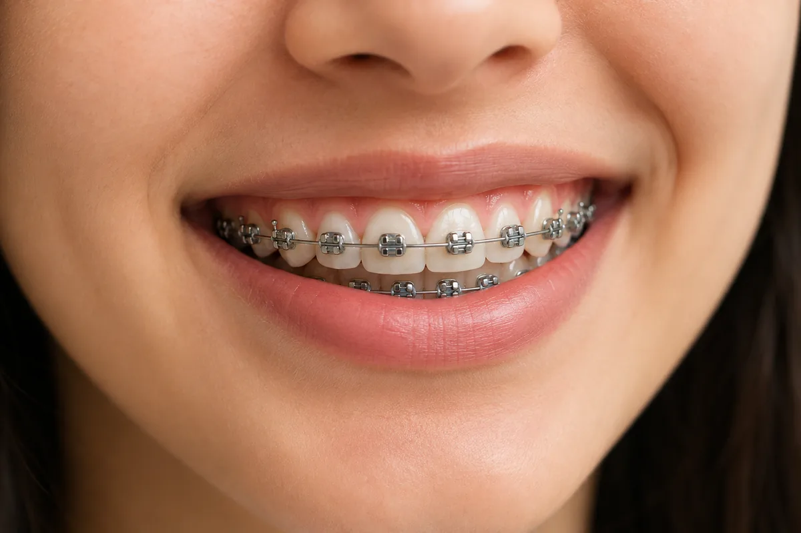
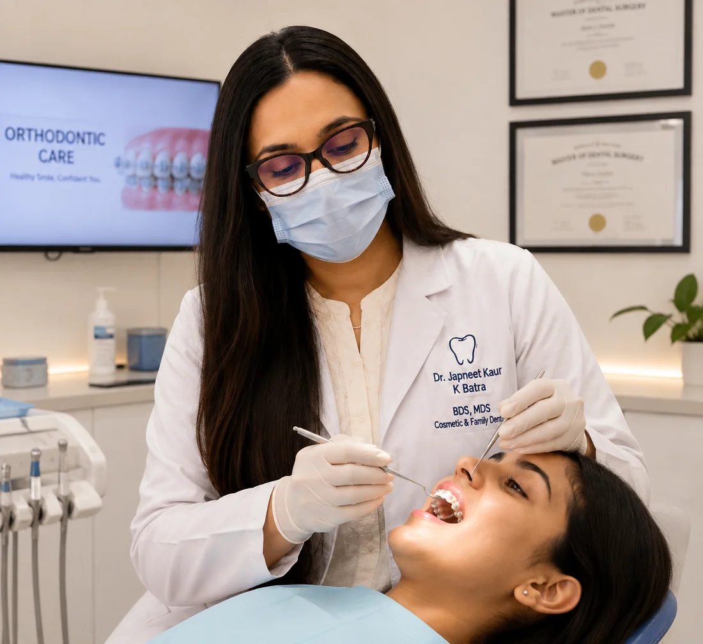
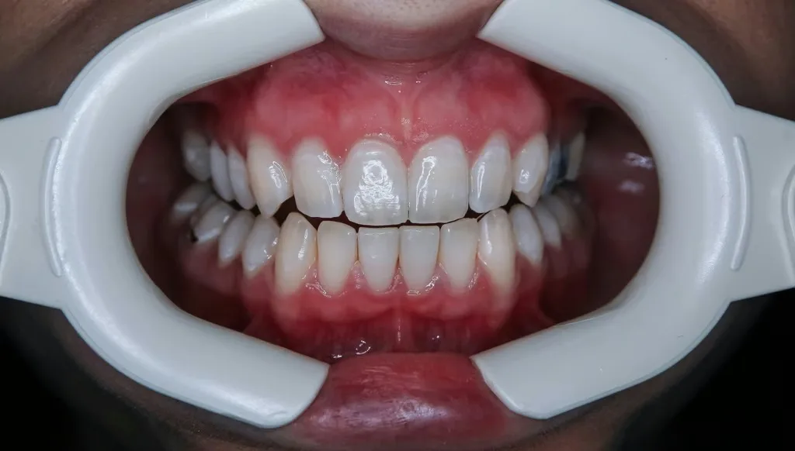

Dental Braces in Ahmedabad: The Key to a Straighter, Healthier Smile

Are you looking for the best dental braces in Ahmedabad? A beautiful smile not only enhances your appearance but also improves your overall oral health. If you have crooked, crowded, spaced, or misaligned teeth, dental braces are one of the most effective and trusted orthodontic treatments available.
At our dental clinic in Ahmedabad, we offer advanced braces treatment to help patients achieve properly aligned teeth and a confident smile.
Dental braces work by applying gentle, continuous pressure to gradually move teeth into their ideal positions. They not only improve the appearance of your smile but also enhance your bite, making it easier to chew, speak, and maintain good oral hygiene.
Why Are Dental Braces Needed?
Dental braces can help correct:
- Crooked or crowded teeth
- Gaps between teeth
- Overbite and underbite
- Crossbite and open bite
- Jaw alignment issues
Properly aligned teeth are easier to clean, reducing the risk of tooth decay, gum disease, and excessive wear on teeth.
Types of Dental Braces Available in Ahmedabad
Modern orthodontic treatments offer several options to suit different needs and lifestyles:
- Metal Braces: Durable, reliable, and traditionally effective for all types of orthodontic cases.
- Ceramic Braces: Tooth-colored brackets that blend naturally with your teeth.
- Self-Ligating Braces: Modern Advanced braces designed for greater comfort and fewer adjustment visits using Modern Ni-Ti & SS wires.
- Clear Aligners: Nearly invisible removable trays that provide a discreet alternative to traditional braces.
Benefits of Dental Braces
Choosing braces treatment in Ahmedabad can provide several benefits, including:
- Improved smile aesthetics
- Affordable
- Enhanced chewing and speech
- Reduced risk of dental problems
- Improved jaw alignment
- Increased self-confidence
Why Choose Our Clinic for Dental Braces in Ahmedabad?
Our experienced orthodontic team lead by Dr. Japneet Kaur Batra (MDS) provides personalized treatment plans for children, teenagers, and adults. We use modern technology and advanced orthodontic techniques to ensure comfortable and effective treatment.
Whether you need traditional metal braces, ceramic braces, or clear aligners, we are committed to helping you achieve a healthy, beautiful smile.
If you are considering Dental braces in Ahmedabad, or Dental Braces in South Bopal schedule a consultation with our expert Orthodontist. We will evaluate your dental condition, discuss the best treatment options, and create a customized and affordable plan to help you achieve perfectly aligned teeth.
Who Braces Are For
Orthodontic treatment is not only cosmetic. Crowded, overlapping or spaced teeth are harder to clean, which raises the risk of decay and gum disease, and an unbalanced bite causes uneven enamel wear over years.
- Crowded or overlapping teeth
- Gaps and spacing
- Overbite, underbite, crossbite or open bite
- Teeth that have drifted after a previous extraction
- Relapse after earlier orthodontic treatment
- Children whose jaw growth needs guiding — assessment is recommended around age 7
Types of Braces We Provide
- Traditional metal braces. The most efficient and cost-effective option, and still the most predictable for complex cases.
- Ceramic braces. Polycrystalline alumina brackets that blend with natural enamel — far less visible, popular with adults and working professionals.
- Self-ligating braces. Brackets that hold the wire without elastic ties, which can mean fewer adjustment visits.
If visibility is your main concern, clear aligners may suit you better. Our honest comparison of both is here: braces vs clear aligners.

The Treatment Process
- Assessment. Clinical examination, photographs, and a digital scan or impressions to plan tooth movement.
- Records and planning. Radiographs to assess roots, jaw relationship and any unerupted teeth.
- Fitting. Brackets bonded and the first archwire placed. Expect three to five days of soreness.
- Adjustments. Every four to six weeks, as the wire sequence progresses.
- Debond and retention. Braces removed, teeth polished, and retainers fitted the same day.
How Long It Takes
Typically 12 to 24 months, with simple cases finishing in 6 to 9 months and complex skeletal cases taking longer. Anyone promising a dramatically shorter time is usually describing a simple case or planning to compromise the result. You will be given a realistic timeline after your scan.
Living With Braces
- Avoid hard and sticky foods — nuts, hard chikki, ice, chewing gum. A loose bracket means an unscheduled visit.
- Cleaning takes longer; interdental brushes and a water flosser are worth the investment
- Soreness for a few days after fitting and each adjustment is normal
- Keep up your routine check-ups and cleanings throughout treatment

Retainers are what hold the result — teeth drift throughout life.
Retainers Are Not Optional
Teeth drift throughout life. Retention is usually a thin bonded wire behind the front teeth, a removable night-time retainer, or both. The most disappointing cases we see are relapses in people who had excellent results years ago and stopped wearing retainers after six months. Budget for retention from the start.
What Affects the Cost
Cost depends on the bracket type, the complexity of the movement required, treatment duration, and whether any extractions or auxiliary appliances are needed. You will receive a written plan with costs before treatment begins — ask us for an assessment.
Your Orthodontist
Orthodontic treatment at our clinic is led by Dr Japneet Kaur Batra, BDS, MDS in Orthodontics & Dentofacial Orthopedics — the three-year postgraduate specialisation in tooth movement and facial growth. She is a certified Invisalign provider, a Senior Lecturer, and has a particular interest in the management of cleft lip and palate patients and in guiding early facial development in children.
Braces in South Bopal & Ahmedabad
Orthodontic treatment means regular visits over one to two years, so how easily you can reach the clinic matters more than for most treatments. We are on the ground floor at B-17/C, Sun South Street, behind Safal Parisar-1, South Bopal — minutes from Bopal, Shela, Ghuma, Shilaj and Ambli, and accessible from across Ahmedabad via the SP Ring Road.
We are open Monday to Saturday 10:30 AM–8:00 PM and Sunday 10:00 AM–12:00 PM, which helps for school-age patients. Book an orthodontic assessment.